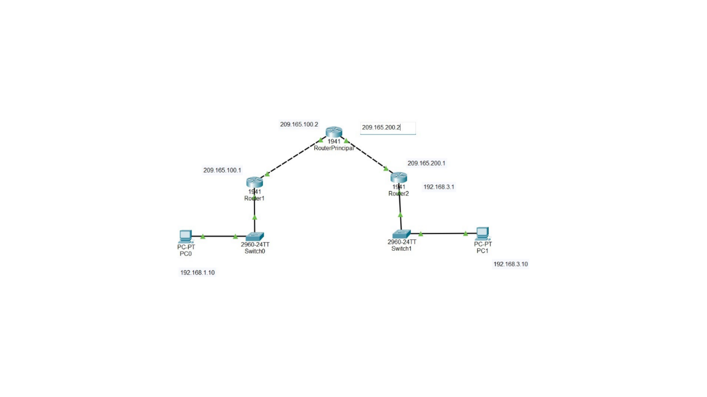

ACTIVIDAD 6
IMPLEMENTACIÓN DE VPN IPSEC SITE-TO-SITE
Topología
La red se compone de los siguientes elementos interconectados para simular una comunicación segura a través de un proveedor de servicios (ISP):
- Tres routers 1941: Router Principal (ISP), R1 y R2.
- Dos switches 2960: Switch0 y Switch1.
- Dos PCs: PC0 (Red 192.168.1.0) y PC1 (Red 192.168.3.0).

Infraestructura Site-to-Site interconectando Red Local 1 y Red Local 2.
1. Configuración Inicial
Se configuran los nombres de host, direcciones IP en las interfaces GigabitEthernet y las rutas estáticas por defecto para asegurar el alcance entre los routers y el ISP.
// Ejemplo de configuración en R1
R1(config)# hostname R1
R1(config)# interface G0/1
R1(config-if)# ip address 192.168.1.1 255.255.255.0
R1(config-if)# no shut
R1(config-if)# interface G0/0
R1(config-if)# ip address 209.165.100.1 255.255.255.0
R1(config)# ip route 0.0.0.0 0.0.0.0 209.165.100.2
R1(config)# hostname R1
R1(config)# interface G0/1
R1(config-if)# ip address 192.168.1.1 255.255.255.0
R1(config-if)# no shut
R1(config-if)# interface G0/0
R1(config-if)# ip address 209.165.100.1 255.255.255.0
R1(config)# ip route 0.0.0.0 0.0.0.0 209.165.100.2
2. Licencia de Seguridad
Es fundamental activar el paquete tecnológico de seguridad en los tres routers (RISP, R1 y R2) para habilitar las funciones de criptografía IPsec.
RISP(config)# license boot module c1900 technology-package securityK9
R1(config)# license boot module c1900 technology-package securityK9
R2(config)# license boot module c1900 technology-package securityK9
ACCEPT? [yes/no]: yes
R1(config)# license boot module c1900 technology-package securityK9
R2(config)# license boot module c1900 technology-package securityK9
ACCEPT? [yes/no]: yes
3. Implementación de ACL's
Se configuran listas de acceso extendidas para identificar el tráfico "interesante" que debe ser protegido por el túnel VPN.
// ACL en R1 (Tráfico de LAN 1 a LAN 2)
R1(config)# access-list 100 permit ip 192.168.1.0 0.0.0.255 192.168.3.0 0.0.0.255
// ACL en R2 (Tráfico de LAN 2 a LAN 1)
R2(config)# access-list 100 permit ip 192.168.3.0 0.0.0.255 192.168.1.0 0.0.0.255
R1(config)# access-list 100 permit ip 192.168.1.0 0.0.0.255 192.168.3.0 0.0.0.255
// ACL en R2 (Tráfico de LAN 2 a LAN 1)
R2(config)# access-list 100 permit ip 192.168.3.0 0.0.0.255 192.168.1.0 0.0.0.255
4. Phase 01: ISAKMP policy
Se define la política de intercambio de llaves para establecer el canal de control seguro, utilizando cifrado AES-256 y autenticación pre-compartida.
R1(config)# crypto isakmp policy 10
R1(config-isakmp)# encryption aes 256
R1(config-isakmp)# authentication pre-share
R1(config-isakmp)# group 5
R1(config)# crypto isakmp key key1 address 209.165.200.1
R1(config-isakmp)# encryption aes 256
R1(config-isakmp)# authentication pre-share
R1(config-isakmp)# group 5
R1(config)# crypto isakmp key key1 address 209.165.200.1
5. Phase 2: IPSec transform-set
Se configura el conjunto de transformación para definir cómo se cifrarán los datos del usuario que viajan a través del túnel.
R1(config)# crypto ipsec transform-set R1->R2 esp-aes 256 esp-sha-hmac
R2(config)# crypto ipsec transform-set R2->R1 esp-aes 256 esp-sha-hmac
R2(config)# crypto ipsec transform-set R2->R1 esp-aes 256 esp-sha-hmac
6. Creación y Aplicación de mapa criptográfico
Se crea el mapa criptográfico para unir el peer remoto, el transform-set y la ACL. Posteriormente se aplica a la interfaz de salida de cada router.
// Configuración en R1
R1(config)# crypto map IPSEC-MAP 10 ipsec-isakmp
R1(config-crypto-map)# set peer 209.165.200.1
R1(config-crypto-map)# set transform-set R1->R2
R1(config-crypto-map)# match address 100
R1(config)# interface G0/0
R1(config-if)# crypto map IPSEC-MAP
R1(config)# crypto map IPSEC-MAP 10 ipsec-isakmp
R1(config-crypto-map)# set peer 209.165.200.1
R1(config-crypto-map)# set transform-set R1->R2
R1(config-crypto-map)# match address 100
R1(config)# interface G0/0
R1(config-if)# crypto map IPSEC-MAP
Conexión establecida
Verificación de Túnel Activo
La activación exitosa se confirma mediante los logs de consola: ISAKMP is ON. La conectividad final se valida con un ping exitoso entre los hosts remotos, asegurando que la comunicación es ahora privada y segura.